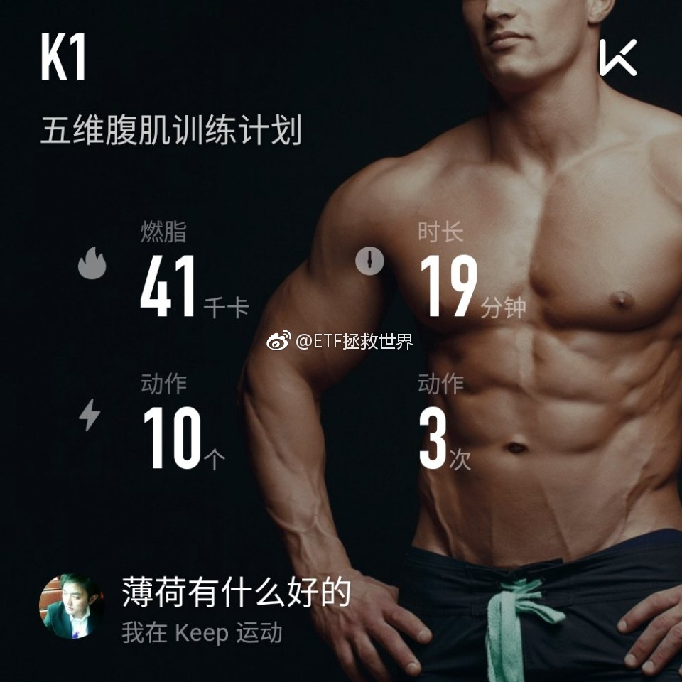

回复@西山居:跌的时候全是鬼故事，涨的时候哪里都好。当然，如果没有利空，一个品种也不会跌。问题在于，有利空然后跌的时候不买，以后就只能去做接盘侠了。刚买了一份，0.6%，不急，等着捡钻石。@ETF拯救世界:我想到了$温氏股份 sz300498$ 很垃圾，没想到这么垃圾。应该买$创业板50 sz399673$ 的。
这种新闻真的没法评论。这帮人到底怎么想的，百思不得其解。@时间视频:【"暴走团"占据主路暴走遭车冲撞致1死2伤 女司机：大意了】7月8日，山东临沂一“暴走团”占据主路内侧车道行走，一辆出租车从后方撞入人群，致1死2伤。肇事女出租车司机董某称“大意了”。有网友质疑，“暴走团”在机动车道上行走，应承担部分责任。临沂警方通报称，司机董某现已被刑拘。网页链接
回复@紫玉生烟雨江南:各大公司都已经以30%-40%的跌幅下调乐视估值了。现在开始买创业基本乐视的雷已经少了至少一半了——以它退市来估算的话。//@紫玉生烟雨江南:但是创业板50里乐视网占比更高。。。关于乐视网对我们的创业板指数的影响，E大怎么看？@ETF拯救世界:我想到了$温氏股份 sz300498$ 很垃圾，没想到这么垃圾。应该买$创业板50 sz399673$ 的。
回复@CZ梦想:不一定啊。你看到的是指数涨，我看到的是2000只股票在下跌。这样跌下去，全市场估值会降低，当然可以买了~就看跌多少了。//@CZ梦想:这个涨法又不能开车了@ETF拯救世界:每日打卡(25)感觉不错。 